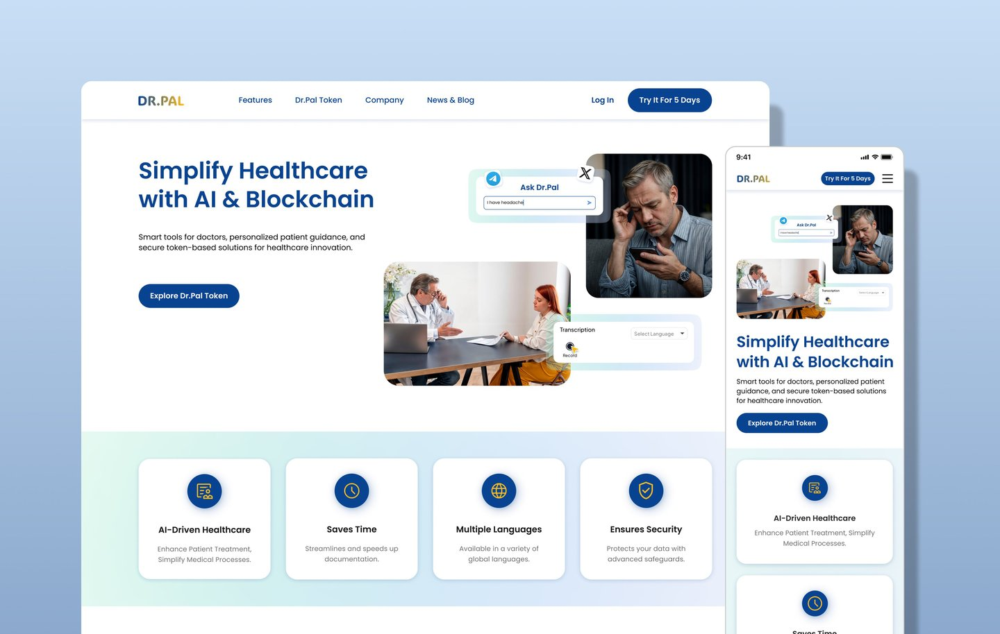
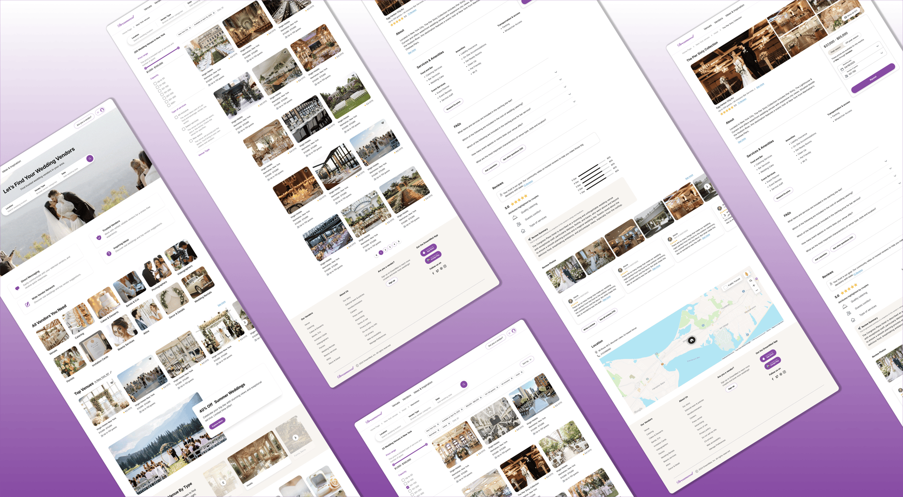
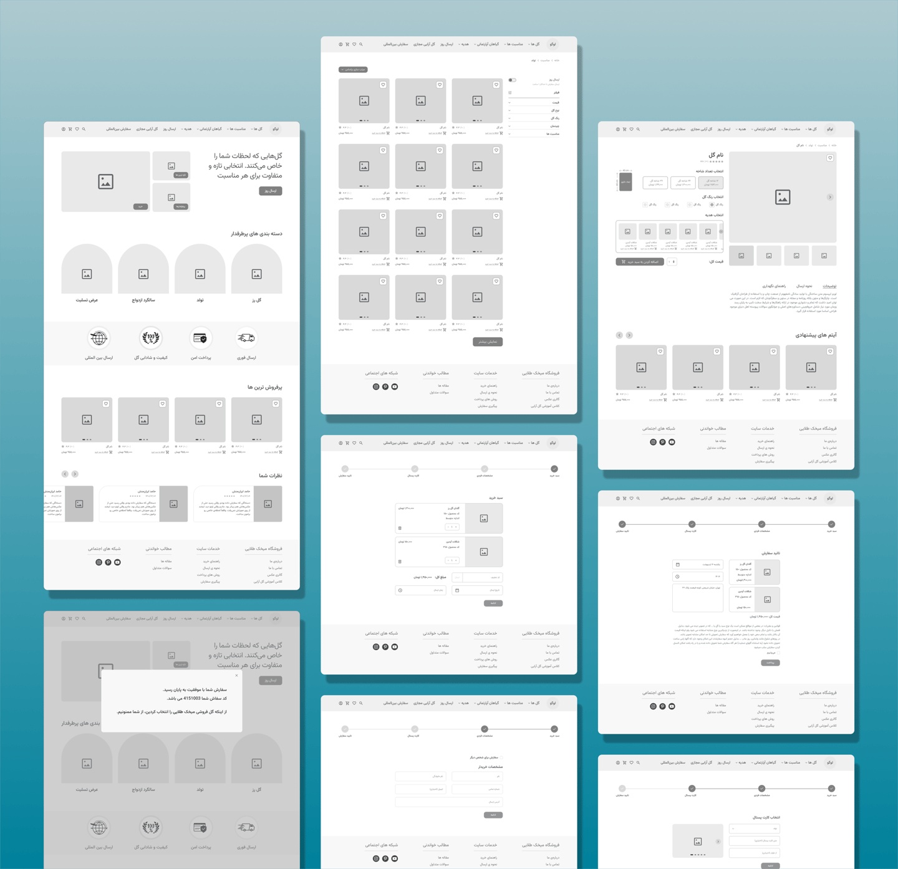

I'm a UX/UI designer who blends user research, usability testing, and iterative design to create digital experiences that are clear, accessible, and delightful. I believe great design starts with understanding people — their goals, frustrations, and the contexts in which they interact with technology.
My work spans healthcare platforms, wedding marketplaces, and e-commerce — from early discovery research and information architecture all the way through high-fidelity prototypes and usability validation.
I thrive in collaborative, cross-functional teams and enjoy turning complex problems into intuitive, evidence-based solutions.

A Responsive Healthcare Platform
Redesigned the responsive website for an AI-powered healthcare platform serving both doctors and patients with intelligent clinical tools.

Wedding Vendor Website Design
Designed a B2C platform connecting couples with trusted wedding vendors across the U.S., with intuitive search, filter, and booking flows.

Flower Shop Web Redesign
Redesigned the information architecture and purchasing experience for an Iranian online flower shop delivering across Tehran.